공정의 동특성
먼저 공정 모델들을 살펴보면 다음과 같았다.
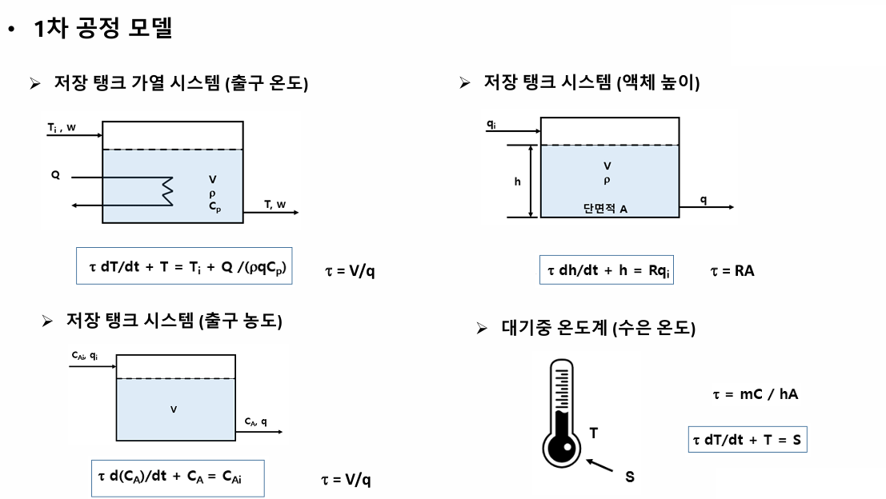
왜 각각이 이렇게 나오는지 궁금하다면? 접은글 참조
1. 저장탱크 가열 시스템
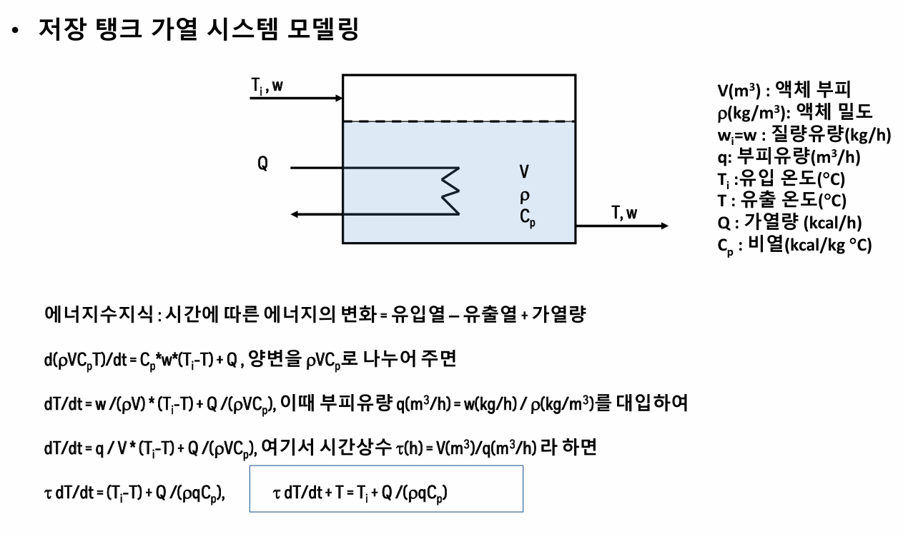
2.저장탱크의 액체 높이
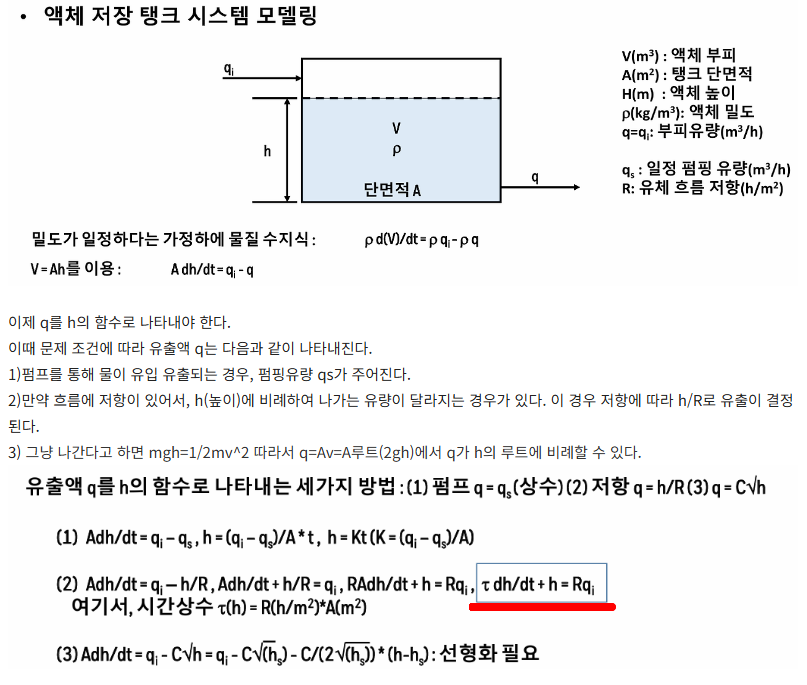
3.저장탱크의 출구농도
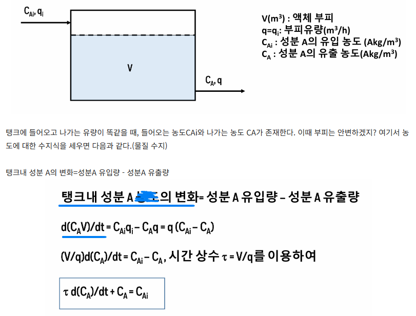
즉 대부분의 1차 공정은 다음과 같은 모델을 따름을 알 수 있다.
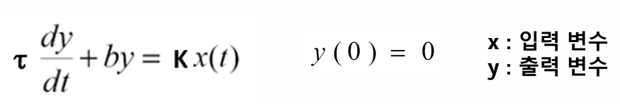
1차 미분방정식으로 위와같이 주어진 1차 공정에 대하여 dy/dt = sY(s) – y(0) 를 이용하여 라플라스 변환을 하면,
τsY(s) + Y(s) = KX(s), ( τ s + 1 ) Y(s) = KX(s) 가 얻어지며 결국 다음의 전달함수가 구해진다.
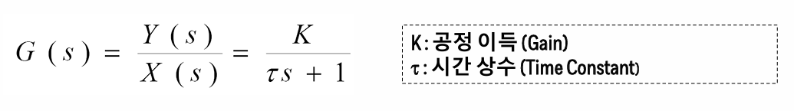
이제 공정의 동특성에 대해서 연구한다는 것은, 그 공정에 다양한 입력(계단응답, 임펄스 응답, 경사응답 등)을 넣었을 때, 그 결과인 출력함수가 어떻게 얻어지냐를 분석하는 것이다.
먼저 1차 공정에 계단 응답을 가하는 경우를 알아보자.
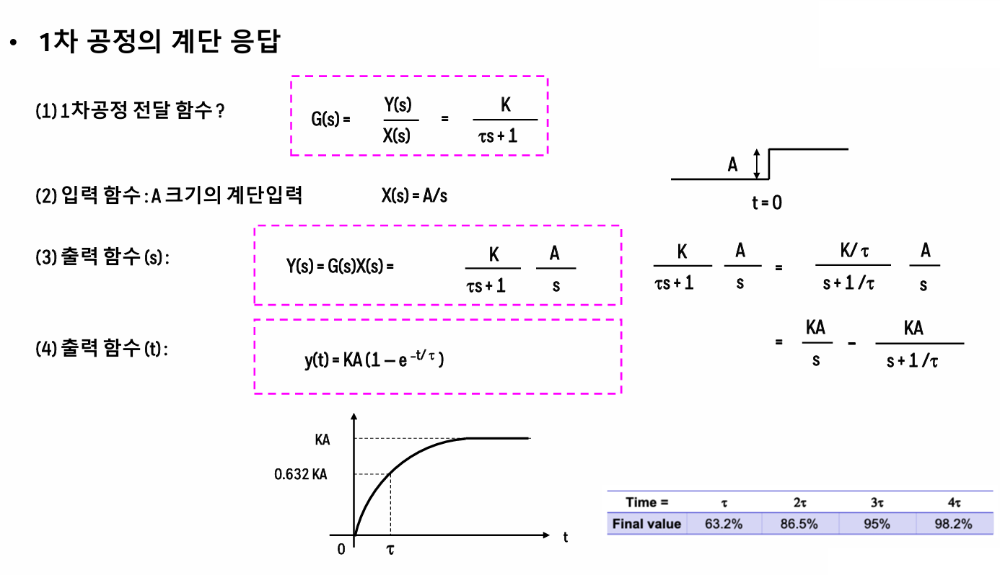
입력함수를 주고, 이것을 통해 출력함수(변수:시간)을 구했다. 이를 살펴보면 시간이 흐름에 따라 출력값은 증가하며 시간이 τ(시간상수)일때 전체값의 63.2%에 도달하게 된다. 옆의 표에 τ값에 따른 출력값을 나타내었다.
예를 들어 어떤 공정의 전달함수가 1/2s+1 이라면, 95%(0.95)만큼 도달하는데 걸리는 시간은 3τ이고 이는 6초이다. 이때 시간상수 τ는 그 공정의 고유함수이다.
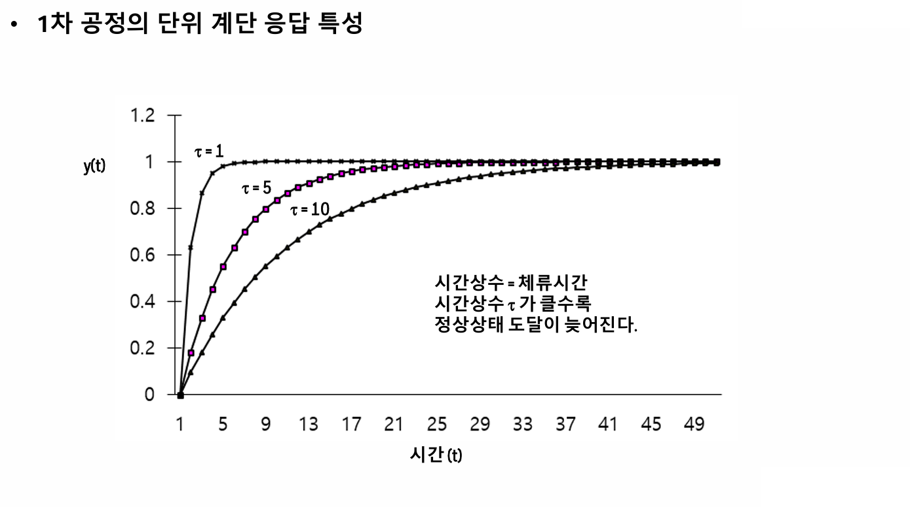
여기서 τ는 체류시간을 나타내기도 하므로 시간상수라고 불린다. τ가 클 수록 정상상태에 늦게 도달한다.
이제 1차 공정에 단위 임펄스 함수를 가하는 경우를 알아보자.
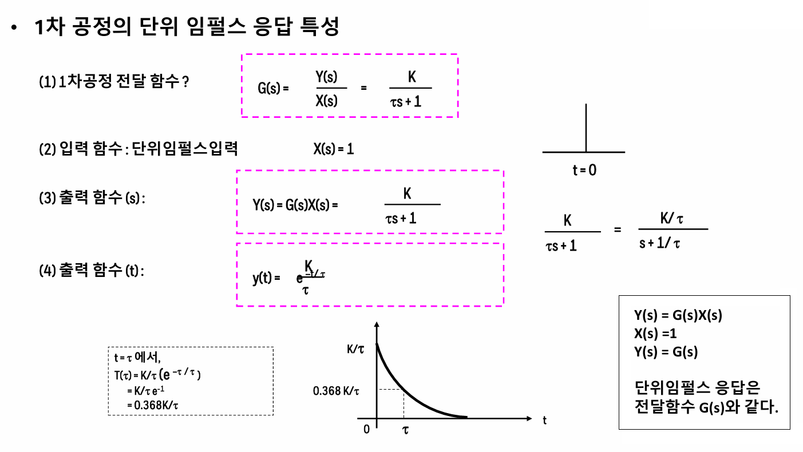
임펄스응답을 주면, 처음에는 최고값이 나오고, 점차 출력이 줄어드는 거동을 보인다. 이때 t= τ 에서 출력은 처음값의 36.8%로 줄어든다.
단위 경사 응답을 주는 경우도 살펴보자.
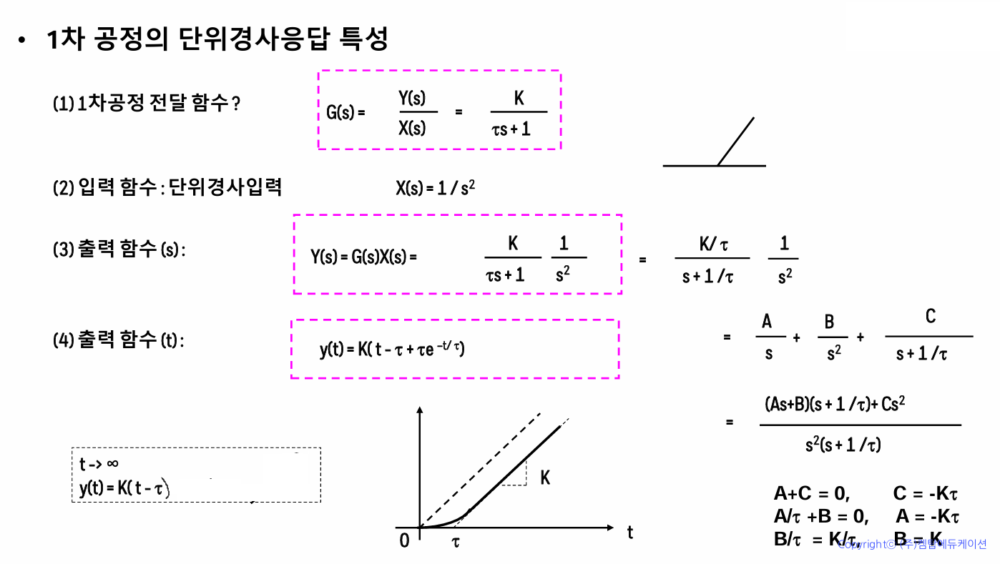
여기서는 기울기가 곧 K가 된다.
이제 시간지연이 있는 1차 공정의 단위 계단 응답에 대한 출력함수를 살펴보자. 시간지연이 있다는 것은 입력을 주고 나서 지연시간 후 반응이 나타나는 것을 의미한다.
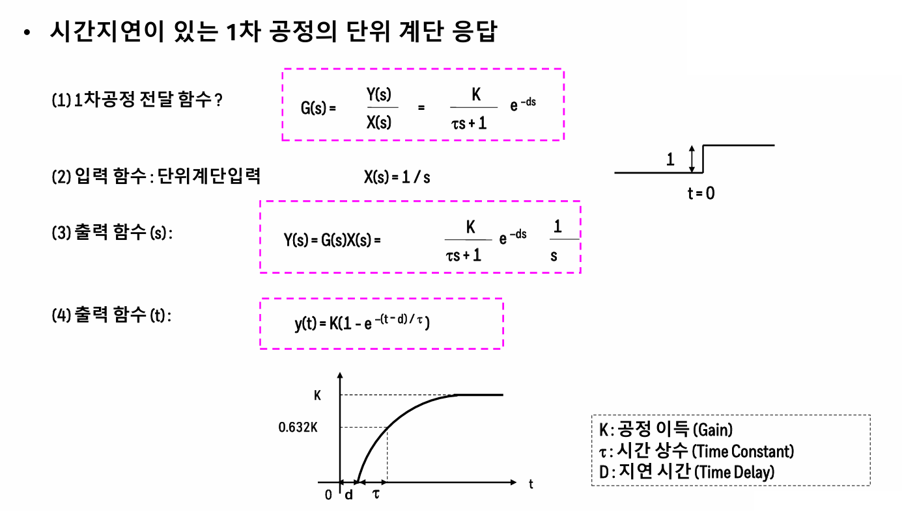
말그대로 그냥 d시간 후 원래 계단 함수의 특성이 나타난다.
여기까지가 1차공정에 대한 동특성을 알아보았다. 이제 공정 중에, 적분공정이라는 것도 알아보자. 적분공정은 보통 정상상태가 아니라 축적이 있는 경우에 동특성이 미분방정식의 형태로 나타나는 게 아니라 시간에 따라 증가하는 공정을 의미한다.
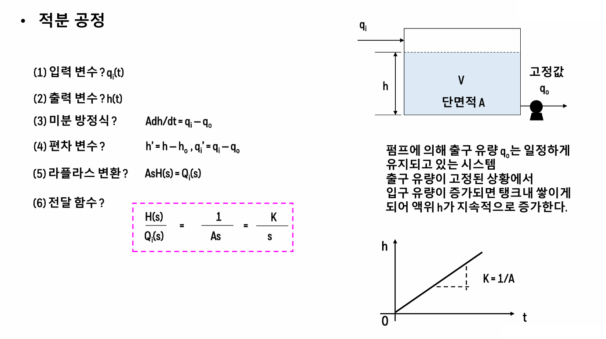
여기서의 각 응답에 대한 출력을 알아보자.
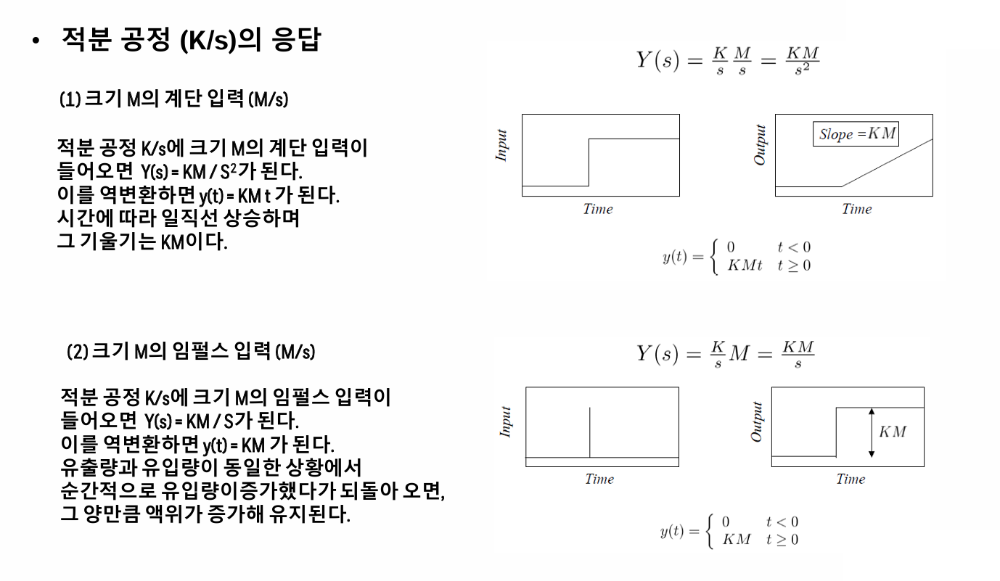
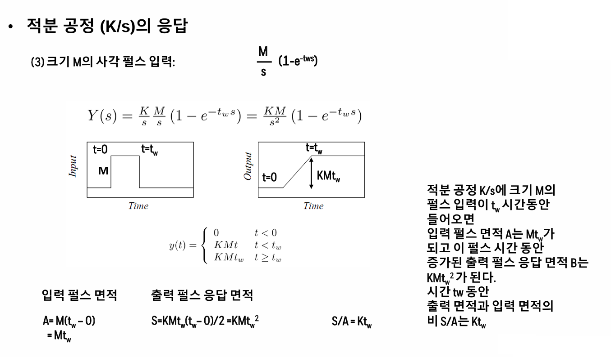
마지막으로, 사각펄스를 1차공정에 적용했을 때 결과도 알아보자.
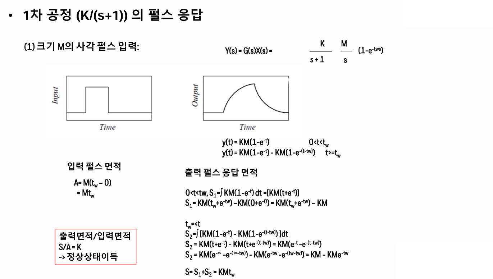
이때 출력면적/입력면적의 비는 K이다.
*사용 자료의 저작권은 켐탑에 있습니다.